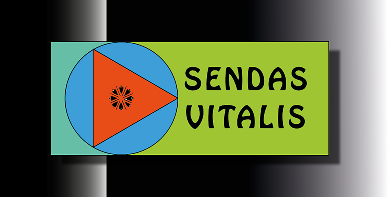

|  |
La
Consciencia Sendas Vitalis es una forma de vivir en paz. Se emprenden caminos de vida, con cuatro metas: Amar, Concientizar, Mantener, Compartir. |
Es un esquema sencillo de ordenamiento de ideas de diferentes fuentes y resultado de la reflexión profunda y sostenida. Se presenta una recomendación para tomar direcciones o caminos a desarrollar en nuestras vidas, cada quien a su manera, en función de disfrutar y gozar el momento del viaje en que cada uno se encuentre en su presente personal dentro de un todo entrelazado. No reemplaza ni rechaza ninguna creencia, religión, secta, o agrupación, no es excluyente.
1. LOGRAR AMAR: Sentir amor es una base imprescindible para ser feliz en forma estable y sólida, y hay diferentes intensidades y tipos: amor materno y paterno, enamorarse locamente, amor maduro y profundo, amor colectivo, familiar, cultural, entre otros, y todos se pueden cultivar. El que nos olvidamos usualmente en tener consciente es el amor por:
LA VIDA & LA NATURALEZA
Admirar el estado natural del universo y su vida, en todas sus formas positivas al que pertenecemos,
aún en asombro de nuestro desconocimiento y ausencia de comprensión de la mayor parte de su grandeza y microscópica integridad.
MI PROPIO SER
Positivos y sonrientes de nosotros mismos, seres únicos y maravillosos.
2. LOGRAR CONCIENTIZAR:
EL TIEMPO
• ciclos - inicio - desarrollo - alternancia - presente
• final - memoria - historia - mantenimiento - preservación - reproducción
• paciencia - oportunidad - persistencia - prioridades - plazos - dosis - estrés - pausas - inercia
• azar - coincidencias - antecedentes - patrones - previsión - consecuencias - riesgos
EL ENTORNO
• lugar - clima - seres - mundos - contexto - adaptación
• espacio - territorio - dimensiones - proporciones - límites
• cuerpo - hábitat
• arraigo - pertenencia - familia - sociedad - cultura
3. LOGRAR MANTENER:
INTEGRIDAD & EQUILIBRIO
• costumbres - hábito - adicción - excesos
• alternancia - contraste
ORDEN & JUSTICIA
• hacer bien - consenso
• lógica personal - lógica general - consideración
CONTROL DE PODERES
• poder - ego - habilidad - don - placer
INTUICIÓN & VOZ INTERNA
• señales - meditación - reflexiónSALUD
• nutrición - higiene - ejercicio - descanso - calma
4. LOGRAR COMPARTIR:
BELLEZA
• artes del tiempo y del espacio (música, danza, poesía, literatura, pintura, escultura, A/V, y muchos más dependiendo de cada cultura)
• las maravillas de la Naturaleza que accedemos con los cinco sentidos y nos dan placer
• los niños, las mujeres, las flores
• risas - placeres - bienestar- sexo• silencio - oscuridad - sueño
EMOCIONES
• amor - cariño - ternura - afecto
• ayuda - solidaridad - gratitud - amabilidad
• generosidad - confianza
VERDADES• conocimientos - experiencias - sabiduría
• conceptos - sistemas - tecnología - herramientas
• comunicación - sinceridad - fidelidad
• respeto - diferencias - admiración - afinidad
FELICIDAD
• Temporal: Es un estado de satisfacción súbita, resultado de la solución definitiva de un problema. Esta felicidad eventualmente se diluye,
no dura mucho tiempo, el logro entra en normalidad y pierde su especialidad por contraste. Incluye similarmente, el disfrute placentero que nos brindan los cinco sentidos.
• Estable: Satisfacción permanente a través de logros, ser útil y al estar en paz.